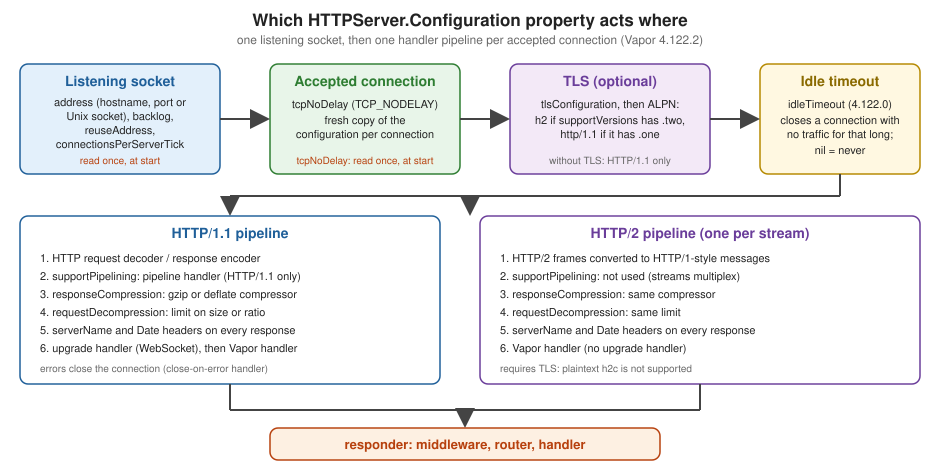

Server Configuration
|
This content was generated with the assistance of AI and should be verified against the official documentation before being relied on in production. |
This page is written against Vapor 4.122.2 (the latest 4.x release, 2026-09-17) on Swift 6.4 in the Swift 6 language
mode, with swift-nio 2.104.0 and swift-nio-ssl 2.x, checked on 2026-10-17. The settings come from
HTTPServer.Configuration in the 4.122.2 sources, which is newer than the official page
(Vapor docs: Server); where the two disagree, the source wins and the page
says so. Vapor 5 is at 5.0.0-beta.4 and not released: its server is a different design and is described in
Vapor 5 (beta): HTTP/2, mTLS and certificate reloading as prose only. Every example below was compiled in a scratch
package with the Swift 6 language mode and no warnings, and the shell output shown was copied from real runs
(plain HTTP, TLS with HTTP/2, a Unix socket, the idle timeout, certificate reload).
The HTTP server is the one part of a Vapor process that faces the network. It owns the listening socket, decides which protocol versions are spoken, optionally terminates TLS, compresses and decompresses bodies, and drops connections that have gone quiet. All of that is plain data on one struct, so the whole policy fits in a single function that you can read, review and test. This page covers that struct property by property, the command-line overrides, TLS in the process versus at a reverse proxy, and how to start, replace or wrap the server.
Where it runs in the request
The server configuration acts before the request lifecycle begins. By the time middleware, the router and your
handler run, the bytes have already been accepted on a socket, decrypted if TLS is on, decompressed if the client sent a
Content-Encoding, and parsed into a Request. On the way out, the response is encoded, optionally compressed, stamped
with Date and (if set) Server headers, and written back. The next figure shows which property acts at which step.

Middleware and routes are covered in Middleware; the process phases around the
server (configure, boot, serve, shutdown) in
Application Lifecycle and the Entrypoint.
Reading and writing the configuration
The configuration lives at app.http.server.configuration, a value of type HTTPServer.Configuration. It is a
Sendable struct, so reading it gives you a copy. To change it, either assign properties through the path
(app.http.server.configuration.port = 9000) or take a copy, change it and assign it back, as the example below does.
When you assign before the server has been created, Vapor stores the value in app.storage and uses it when the server
is first built (the first call to app.server or app.http.server.shared). When you assign after the server exists,
the new value is forwarded to the live HTTPServer. Two rules follow from the 4.122.2 source:
-
The settings read once, when the server starts, are
address(sohostnameandporttoo),backlog,reuseAddress,tcpNoDelayandconnectionsPerServerTick. Changing any of them after the server started does not rebind anything. Worse, Vapor logsCannot modify server configuration after server has been started.and discards the whole new value, including the properties that could have been applied. -
Everything else is read per connection, from the configuration current at the moment the connection is accepted. Compression, decompression, pipelining, HTTP versions, the TLS configuration,
serverName,idleTimeoutandreportMetricscan therefore be changed while the server runs, and only connections accepted afterwards see the change.shutdownTimeoutis read when shutdown begins.
| Property | Type | Default | Effect |
|---|---|---|---|
|
|
|
Where to listen: |
|
|
|
Convenience accessors for the |
|
|
|
Length of the kernel queue of connections that finished the TCP handshake but were not accepted yet. |
|
|
|
Sets |
|
|
|
Sets |
|
|
|
Whether and for which media types responses are compressed (gzip or deflate, chosen from |
|
|
|
Whether request bodies with |
|
|
|
Installs NIO’s HTTP/1.1 pipelining handler. Not used for HTTP/2. |
|
|
|
Which HTTP versions to speak. The default is computed in the initializer from |
|
|
|
Serve HTTPS instead of HTTP. |
|
|
|
If set, the value of the |
|
|
|
Report HTTP metrics through swift-metrics. |
|
|
|
Where server errors and the start and stop messages are logged. |
|
|
|
How long a graceful shutdown waits for in-flight requests before failing with |
|
|
|
4.122.0: close inbound connections that were idle for this long. |
|
|
|
How many new TCP connections the server accepts per event-loop tick. Almost nobody changes it. |
|
|
|
Replace NIOSSL’s certificate verification (client certificates); mutually exclusive. |
Two traps in the table. First, the hostname default is the loopback address, so a server inside a container that keeps
the default is unreachable from outside the container (see The address: hostname, port and Unix sockets). Second,
supportVersions is decided when a Configuration is initialized:
HTTPServer.Configuration(tlsConfiguration: ...) enables HTTP/2 by itself, but assigning tlsConfiguration on an
existing value does not change supportVersions. Vapor works around this on the TLS path (it adds the h2 and
http/1.1 ALPN protocols from supportVersions for every connection), so set supportVersions explicitly whenever you
turn TLS on.
A complete server setup
The function below sets every commonly tuned property from the environment, with the safe defaults for a service behind
a reverse proxy: bind address and port from HOST and PORT, response compression on, request decompression with a
hard size cap, no Server header, a 75-second idle timeout and a 20-second graceful shutdown.
import Vapor
/// Applies the Bookshelf HTTP server settings. Call it from `configure(_:)`.
func configureHTTPServer(_ app: Application) {
var server = app.http.server.configuration
// Where to listen. A container needs 0.0.0.0; the default is 127.0.0.1.
server.hostname = Environment.get("HOST") ?? "127.0.0.1"
server.port = Environment.get("PORT").flatMap(Int.init) ?? 8080
// Socket options (read once, when the server starts).
server.backlog = 512
server.reuseAddress = true
server.tcpNoDelay = true
// Compress text responses, accept gzip/deflate request bodies with a hard cap.
server.responseCompression = .enabled
server.requestDecompression = .enabled(limit: .size(1_000_000))
// Hide the framework name instead of sending "Server: vapor".
server.serverName = nil
// Close connections that sat idle for 75 seconds (4.122.0 and later).
server.idleTimeout = .seconds(75)
// Give in-flight requests 20 seconds to finish during a graceful shutdown.
server.shutdownTimeout = .seconds(20)
app.http.server.configuration = server
}Call it from configure(_:) before anything starts the server, as the first statement after logging is bootstrapped.
Reading and writing a local copy of the struct and assigning it back once avoids half-applied configuration if a later
line throws, and it makes the new value appear in one place in code review. Notes on individual lines:
-
Environment.get("HOST")reads the process environment and the.envfiles thatApplication.makeloaded; see Configuration and Environment. -
.size(1_000_000)is one of the threeDecompressionLimitcases, shown in Compression. -
serverName = nilis the default and is written out only to document the choice. Removing the framework name from responses is hardening by obscurity at best; the point is not to advertise a version.
The address: hostname, port and Unix sockets
hostname is the interface the server binds, not a name clients use. 127.0.0.1 (the default) accepts only local
connections, which is right on a laptop and wrong in a container or on a VM: Docker publishes a container port to the
container’s own non-loopback interface, so the server must bind 0.0.0.0 (all IPv4 interfaces) or the specific
interface address (see Deployment with Docker). port defaults to
8080; ports below 1024 need privileges on Linux and macOS, which is the main reason to put a proxy on 80 and 443 and
keep Vapor on a high port. port: 0 asks the operating system for a free port, useful in tests
(see Starting the server manually).
The address can also be a Unix domain socket. BindAddress has exactly two cases:
public enum BindAddress: Equatable, Sendable {
case hostname(_ hostname: String?, port: Int?)
case unixDomainSocket(path: String)
}A socket avoids the TCP stack between a proxy and Vapor on the same host and lets the filesystem permissions decide who
may connect. Pass it with --unix-socket (the next section) or assign
app.http.server.configuration.address = .unixDomainSocket(path: "/run/bookshelf/app.sock"). Vapor removes the socket
file again on a graceful shutdown (the run below shows ls finding nothing afterwards). The path must fit in
sockaddr_un, which is about 100 bytes: a long path (a deep build or temp directory, for instance) fails at startup
with NIOCore.SocketAddressError.unixDomainSocketPathTooLong.
The serve command
serve is the default command, so swift run App and swift run App serve are the same thing. Its flags override the
configuration for that run:
| Flag | Short | Effect |
|---|---|---|
|
|
Override |
|
|
Override |
|
|
|
|
none |
Listen on a Unix domain socket at this path. It is missing from the official page, but exists in 4.122.2. |
Combining a socket with any of the others stops the process with ServeCommand.Error.incompatibleFlags. A flag beats
the configured value, and the configured value beats the built-in default; the run below configures port 1 (impossible
without root) in the environment and still serves on 18296 because -b wins:
$ PORT=1 swift run App serve -b 127.0.0.1:18296
[ NOTICE ] Server started on http://127.0.0.1:18296
$ curl -s localhost:18296/hello
Hello, world!
$ swift run App serve --unix-socket /tmp/bk.sock
[ NOTICE ] Server started on http+unix: /tmp/bk.sock
$ curl -s --unix-socket /tmp/bk.sock http://localhost/hello
Hello, world!
$ swift run App serve --unix-socket /tmp/x.sock -p 9
Fatal error: Error raised at top level: Vapor.ServeCommand.Error.incompatibleFlagsserve also installs the SIGTERM and SIGINT handlers that stop the server; the shutdown sequence (and why lifecycle
handlers run before the server has drained) is in
the real shutdown order.
Compression
Response compression
responseCompression controls gzip and deflate for responses. The presets in 4.122.2:
| Preset | Behavior |
|---|---|
|
No response is compressed unless a route opts in. |
|
Nothing is compressed, and routes cannot opt in ( |
|
Off by default, on for text-like media types ( |
|
On for everything except media types that are already compressed ( |
|
Full control of the media-type sets and the compressor’s initial buffer size (default 1024 bytes). |
A response is compressed only when the client advertises support in Accept-Encoding; the client never has to opt in
otherwise. In 4.122.2 the enabled(...) factory stores allowRequestOverrides: true whatever value you pass, so use
.disabled(allowedTypes:allowRequestOverrides:) or .forceDisabled if you need to forbid overrides.
A route or group can override the server default with ResponseCompressionMiddleware. With compression off globally,
this group compresses its responses:
/// Per-route compression override: compress this group even though the server default is off.
func registerCompressedRoutes(_ app: Application) {
let compressed = app.grouped(ResponseCompressionMiddleware(override: .enable))
compressed.get("books", "export") { req async -> String in
String(repeating: "Bookshelf row, ", count: 200)
}
}The overrides are .enable, .disable and .useDefault. A response that sets its own preference
(response.headers.responseCompression) beats the middleware unless the middleware was created with force: true:
$ curl -s -H 'Accept-Encoding: gzip' localhost:18294/books/export -o /dev/null -D -
HTTP/1.1 200 OK
content-type: text/plain; charset=utf-8
connection: keep-alive
date: Sat, 17 Oct 2026 14:44:56 GMT
Content-Encoding: gzip
content-length: 59Compression costs CPU on every response, and two situations call for care. Compressing responses that carry both a
secret and attacker-controlled text is the precondition of the BREACH attack on HTTPS, and when a reverse proxy already
compresses, compressing twice wastes cycles. Many deployments leave Vapor’s compression off and
let the proxy (nginx gzip on, or Brotli at a CDN) do it.
Request decompression
requestDecompression inflates request bodies sent with Content-Encoding: gzip or deflate before they reach the
route. In 4.122.2 the default is .enabled with .ratio(25). The official page still says the default is .disabled
with .ratio(10); the initializer in the source is authoritative. The limit exists to stop a zip bomb, a few kilobytes
that inflate to gigabytes:
DecompressionLimit |
Meaning |
|---|---|
|
Reject a body that inflates to more than that multiple of its compressed size (default 25). |
|
Reject a body that inflates to more than that many bytes. |
|
No limit. Only for trusted clients. |
The decompression limit is separate from the body-size limit that routes enforce when they collect a body
(app.routes.defaultMaxBodySize, 16 KB by default, or .collect(maxSize:) per route; see
Request and Response). Both apply: an inflated body still has to fit the
route’s limit. Set .disabled if no client of your API sends compressed bodies, which removes the code path entirely.
HTTP versions and pipelining
supportVersions is a Set<HTTPVersionMajor> with two cases, .one (HTTP/1.1) and .two (HTTP/2).
-
Without TLS, only HTTP/1.1 exists. Listing
.twowithout atlsConfigurationends the process withPlaintext HTTP/2 (h2c) not yet supported.(afatalErrorwhen the first connection is accepted, not at startup). -
With TLS, the server advertises the versions through ALPN, with
h2first. A browser orcurl --http2picks HTTP/2; a client without ALPN gets HTTP/1.1.[.two]alone refuses HTTP/1.1 clients, which is rarely what you want. -
HTTP/2 does not use
supportPipelining: streams are multiplexed by the protocol. Pipelining (several HTTP/1.1 requests sent back to back on one connection, answered in order) is handled by NIO’s pipeline handler, on by default. The official page says the default isfalse; the source saystrue.
The listener, TLS, idle and handler layers are the ones drawn in the figure above. Each HTTP/2 stream gets its own
handler pipeline (compression, decompression, request decoder, response encoder, Vapor handler), so the same compression
and serverName settings apply to both versions. The HTTP/1.1 pipeline additionally has the upgrade handler that turns
a request into a WebSocket connection.
Timeouts: idleTimeout and shutdownTimeout
idleTimeout was added in Vapor 4.122.0 (2026-07-01, pull request 3473) and is not in the official documentation yet.
When set, every inbound connection gets an IdleStateHandler and a handler that closes it when no read or write has
happened for the configured time; the log line at debug level is Closing idle connection. The default nil keeps the
old behavior: Vapor itself never closes an idle keep-alive connection.
The reason to set it is almost always a reverse proxy or load balancer in front of Vapor. A proxy that pools upstream
connections picks an idle connection from its pool; if Vapor has just closed it, the proxy sends a request into a dead
socket and the user sees a 502. The Vapor source documents the rule: make idleTimeout longer than the upstream’s
idle-pool timeout, so the proxy always closes first. nginx closes an idle upstream connection after the upstream
block’s keepalive_timeout, 60 seconds by default, which is why the example uses 75 seconds. Real run with
idleTimeout temporarily set to two seconds and a client that sent one request and went quiet:
$ (printf 'GET /hello HTTP/1.1\r\nHost: x\r\n\r\n'; sleep 4) | nc 127.0.0.1 18297
HTTP/1.1 200 OK
content-type: text/plain; charset=utf-8
content-length: 13
...
$ grep -i idle run.log
[ DEBUG ] Closing idle connection (Vapor/CloseOnIdleHandler.swift:17)The idle timer counts any traffic on the connection, so a long-running streamed response or a WebSocket that exchanges
pings never trips it, but a connection waiting silently for a slow handler to start answering does. Do not set
idleTimeout below your slowest legitimate handler; if you must, stream a response early.
shutdownTimeout (10 seconds by default) bounds the graceful stop: the server stops accepting connections, waits for
in-flight requests, and if they do not finish in time fails with Abort(.internalServerError, reason: "Server stop took
too long.") and logs Could not stop HTTP server. Set it a little below the orchestrator’s kill grace period (30
seconds for Kubernetes by default) so Vapor reports the failure itself rather than being killed.
Production and Performance builds a drain handler on this setting,
and Deployment Targets covers the orchestrators.
TLS in the Vapor process
Assign a NIOSSL.TLSConfiguration to tlsConfiguration. NIOSSL is a separate module, so add the product to the target
(swift-nio-ssl, as the template already resolves it transitively but does not expose it to your target):
// Package.swift (excerpt)
dependencies: [
.package(url: "https://github.com/vapor/vapor.git", from: "4.122.2"),
.package(url: "https://github.com/apple/swift-nio-ssl.git", from: "2.30.0"),
],
targets: [
.executableTarget(name: "App", dependencies: [
.product(name: "Vapor", package: "vapor"),
.product(name: "NIOSSL", package: "swift-nio-ssl"),
]),
]Source: apple/swift-nio-ssl
The next function loads a PEM chain and key whose paths come from the environment, so no path or key is in the source.
/path/to/fullchain.pem and /path/to/privkey.pem below are placeholders for your own files:
import Vapor
import NIOSSL
/// Builds a server TLS configuration from PEM files.
func makeTLSConfiguration(certPath: String, keyPath: String) throws -> TLSConfiguration {
let chain = try NIOSSLCertificate.fromPEMFile(certPath).map { NIOSSLCertificateSource.certificate($0) }
let key = try NIOSSLPrivateKey(file: keyPath, format: .pem)
return .makeServerConfiguration(certificateChain: chain, privateKey: .privateKey(key))
}
/// Terminates TLS inside the Vapor process. Paths come from the environment (placeholders below).
func configureTLS(_ app: Application) throws {
// TLS_CERT_PATH=/path/to/fullchain.pem TLS_KEY_PATH=/path/to/privkey.pem
guard let certPath = Environment.get("TLS_CERT_PATH"),
let keyPath = Environment.get("TLS_KEY_PATH")
else {
app.logger.notice("TLS_CERT_PATH or TLS_KEY_PATH not set, serving plain HTTP")
return
}
app.http.server.configuration.tlsConfiguration = try makeTLSConfiguration(
certPath: certPath,
keyPath: keyPath
)
// With TLS on, supportVersions defaults to [.one, .two]; spell it out to make the intent visible.
app.http.server.configuration.supportVersions = [.one, .two]
app.http.server.configuration.port = 8443
// Pick up renewed certificates on SIGHUP, without a restart.
app.lifecycle.use(CertificateReloader(certPath: certPath, keyPath: keyPath))
}Source: Vapor docs: Server, TLS
$ export TLS_CERT_PATH=/path/to/fullchain.pem TLS_KEY_PATH=/path/to/privkey.pem
$ swift run App serve
[ NOTICE ] Server started on https://127.0.0.1:8443
$ curl -sk --http2 -o /dev/null -D - https://localhost:8443/hello -w 'http=%{http_version}\n'
HTTP/2 200
content-type: text/plain; charset=utf-8
content-length: 13
http=2
$ curl -sk --http1.1 -o /dev/null -w 'http=%{http_version}\n' https://localhost:8443/hello
http=1.1For local experiments generate a throwaway self-signed certificate and use curl -k to skip verification; never ship
it:
openssl req -x509 -newkey rsa:2048 -nodes -keyout key.pem -out cert.pem -days 1 \
-subj "/CN=localhost" -addext "subjectAltName=DNS:localhost"If the files cannot be read or parsed, NIOSSLCertificate.fromPEMFile or NIOSSLPrivateKey(file:format:) throws
inside configure, and the process exits before listening, which is the behavior you want. A bad configuration that
slips through to connection time is different: Vapor logs Could not configure TLS and closes that connection.
Reloading certificates without a restart
Let’s Encrypt certificates last 90 days (Let’s Encrypt FAQ) and are renewed on disk.
In Vapor 4 the server reads tlsConfiguration and builds a fresh NIOSSLContext for every accepted connection, so
assigning a new tlsConfiguration makes all new connections use the new certificate; connections already established
keep the old one until they close. A LifecycleHandler that re-reads the files on SIGHUP turns that into a hot reload:
@preconcurrency import Dispatch
import Foundation
import NIOConcurrencyHelpers
import Vapor
/// Re-reads the certificate and key when the process receives SIGHUP.
///
/// The HTTP server reads `tlsConfiguration` for every new connection, so connections accepted
/// after the swap use the new certificate; existing connections keep the old one.
final class CertificateReloader: LifecycleHandler, Sendable {
let certPath: String
let keyPath: String
private let source = NIOLockedValueBox<(any DispatchSourceSignal)?>(nil)
init(certPath: String, keyPath: String) {
self.certPath = certPath
self.keyPath = keyPath
}
func didBoot(_ application: Application) throws {
signal(SIGHUP, SIG_IGN) // let Dispatch handle it instead of the default action (terminate)
let source = DispatchSource.makeSignalSource(signal: SIGHUP, queue: .global())
source.setEventHandler { [certPath, keyPath] in
do {
application.http.server.configuration.tlsConfiguration = try makeTLSConfiguration(
certPath: certPath,
keyPath: keyPath
)
application.logger.notice("TLS certificate reloaded")
} catch {
// Keep serving with the previous certificate.
application.logger.error("TLS certificate reload failed: \(error)")
}
}
source.resume()
self.source.withLockedValue { $0 = source }
}
func shutdown(_ application: Application) {
self.source.withLockedValue {
$0?.cancel()
$0 = nil
}
}
}Source: vapor/vapor 4.122.2: HTTPServer.swift, childChannelInitializer (this reload pattern is derived from reading that code, not an official recipe)
Run against a certificate that is replaced on disk, then a corrupted one, with a client that prints the served subject:
$ sub() { echo | openssl s_client -connect 127.0.0.1:8443 -servername localhost 2>/dev/null | openssl x509 -noout -subject; }
$ sub
subject= /CN=localhost/O=first
$ # renew: overwrite cert.pem and key.pem, then
$ kill -HUP $(pgrep -f 'App serve')
$ sub
subject= /CN=localhost/O=second
$ echo garbage > cert.pem; kill -HUP $(pgrep -f 'App serve'); sub
subject= /CN=localhost/O=secondThe log shows TLS certificate reloaded, then TLS certificate reload failed: failedToLoadCertificate for the
corrupted file, and the server keeps the last good certificate. The handler uses Dispatch signal sources the same way
ServeCommand does; under Swift 6 it needs @preconcurrency import Dispatch because DispatchSourceSignal is not
Sendable in the SDK, and the signal is guarded by a lock box rather than an unchecked conformance.
TLS settings worth knowing
TLSConfiguration.makeServerConfiguration(certificateChain:privateKey:) returns sensible modern defaults (TLS 1.2 or
newer, system cipher list). Useful members:
-
minimumTLSVersion(for example.tlsv13if no old client matters), -
certificateVerificationplustrustRootsfor client certificates (mutual TLS), withcustomCertificateVerifyCallbackWithMetadataon the server configuration andRequest.peerCertificateChainto read the verified chain in a handler, -
applicationProtocols: leave it empty; Vapor appendsh2andhttp/1.1according tosupportVersionsfor you.
TLS at the reverse proxy
The alternative to in-process TLS is to terminate it in front of Vapor, the arrangement most production deployments use and the one the Axum section of this site describes for Rust in TLS and HTTPS:
| Question | TLS in Vapor | TLS at the proxy (nginx, Caddy, a cloud load balancer) |
|---|---|---|
Certificate renewal |
Your process (the SIGHUP handler above) |
The proxy’s ACME client or the cloud |
HTTP/2 to browsers |
Yes, with |
Yes, from the proxy; the hop to Vapor is HTTP/1.1 |
Port 80 and 443 |
Needs privileges or a capability |
The proxy owns them |
Extra hop and plaintext on the host |
None |
Plaintext on loopback or the private network |
Client address in the app |
The socket peer is the client |
Needs a forwarded header (below) |
Static files, compression, rate limits, WAF |
You build them |
Often built in |
Behind a proxy, leave tlsConfiguration at nil and supportVersions at [.one]: Vapor cannot speak HTTP/2 without
TLS, so the proxy must talk HTTP/1.1 to it. An nginx configuration for the Bookshelf service, with placeholder
certificate paths, follows:
upstream bookshelf {
server 127.0.0.1:8080;
keepalive 32;
keepalive_timeout 60s; # Vapor idleTimeout must be longer than this
}
server {
listen 443 ssl;
http2 on;
server_name books.example.com;
ssl_certificate /path/to/fullchain.pem;
ssl_certificate_key /path/to/privkey.pem;
location / {
proxy_pass http://bookshelf;
proxy_http_version 1.1; # required for keepalive to the upstream
proxy_set_header Connection ""; # do not forward "Connection: close"
proxy_set_header Host $host;
proxy_set_header X-Forwarded-For $remote_addr; # overwrite, never append the client's own value
proxy_set_header X-Forwarded-Proto $scheme;
}
}WebSocket routes (see WebSockets) additionally need
proxy_set_header Upgrade $http_upgrade; and proxy_set_header Connection "upgrade"; on their location.
The client address behind a proxy
With a proxy, req.remoteAddress is the proxy’s socket. req.peerAddress tries the Forwarded header, then
X-Forwarded-For, then falls back to the socket peer, and reports port 80 for the first two. In 4.122.2 these are the
only places Vapor reads forwarded headers: there is no global "trusted proxy" setting, X-Forwarded-Proto is not
interpreted, and an X-Forwarded-For with several comma-separated addresses does not parse (the result is nil, not
the first address).
/// Shows the two ways of reading the client address behind a reverse proxy.
func registerAddressRoute(_ app: Application) {
app.get("whoami") { req async -> [String: String] in
[
// The socket peer: the proxy when there is one.
"remote": req.remoteAddress?.description ?? "unknown",
// Forwarded / X-Forwarded-For if present, otherwise the socket peer.
"peer": req.peerAddress?.description ?? "unknown",
]
}
}$ curl -s -H 'X-Forwarded-For: 203.0.113.9' localhost:18294/whoami
{"remote":"[IPv4]127.0.0.1\/127.0.0.1:58434","peer":"[IPv4]203.0.113.9:80"}
$ curl -s localhost:18294/whoami
{"remote":"[IPv4]127.0.0.1\/127.0.0.1:58436","peer":"[IPv4]127.0.0.1\/127.0.0.1:58436"}The first request shows the danger: the header is trusted from anyone who can reach Vapor. If the port is reachable
without the proxy, a client can claim any address and defeat IP-based rate limits or allow lists. Bind Vapor to
loopback or a private network, have the proxy overwrite the header (as in the nginx block above), and use peerAddress
only for logging and soft limits; see Security Hardening for the wider
picture.
Starting the server manually
serve is a command like any other. The server underneath is available as app.server, a value of any Server, and
can be driven by hand, for instance in an integration test that needs a real socket instead of the in-memory tester:
/// Starts the real server on an OS-assigned port, returns the port, then stops it.
func probeServer(_ app: Application) async throws -> Int {
try await app.server.start(address: .hostname("127.0.0.1", port: 0))
let port = app.http.server.shared.localAddress?.port ?? 0
await app.server.shutdown()
return port
}Source: Vapor docs: Server, manual start
start(address:) takes an optional BindAddress that overrides the configured one for that start (nil uses the
configuration as is). With port: 0 the OS picks a free port and Vapor updates its configuration with the real one,
which is why localAddress?.port returns it. The calls to use are the async ones: the synchronous start(address:),
shutdown() and onShutdown.wait() shown on the official page are marked noasync and fail to compile in an
async function; onShutdown is an EventLoopFuture<Void>, so in async code write try await
app.server.onShutdown.get(). A server that is started must also be shut down before the HTTPServer is released; an
assert in its deinit enforces it in debug builds.
Replacing the server
app.servers holds the factory behind app.server. The default is app.servers.use(.http). Any type conforming to
Server can replace it, and a Provider extension gives it the leading-dot spelling. The example below decorates
Vapor’s own HTTP server with log lines, which is also the template for wrapping it with metrics or a startup check:
import Vapor
/// A custom `Server` that decorates Vapor's own HTTP server with log lines.
struct LoggingServer: Server {
let wrapped: HTTPServer
let logger: Logger
var onShutdown: EventLoopFuture<Void> { wrapped.onShutdown }
@available(*, noasync, message: "Use the async start(address:) method instead.")
func start(address: BindAddress?) throws {
logger.notice("starting (sync)")
try wrapped.start(address: address)
}
func start(address: BindAddress?) async throws {
logger.notice("starting")
try await wrapped.start(address: address)
logger.notice("started")
}
@available(*, noasync, message: "Use the async shutdown() method instead.")
func shutdown() {
wrapped.shutdown()
}
func shutdown() async {
logger.notice("stopping")
await wrapped.shutdown()
}
}
extension Application.Servers.Provider {
/// `app.servers.use(.logging)`
static var logging: Self {
.init { app in
app.servers.use { app in
LoggingServer(wrapped: app.http.server.shared, logger: app.logger)
}
}
}
}Server requires onShutdown, both start(address:) variants and both shutdown() variants. The synchronous ones are
noasync; the protocol still lists them because of Vapor 4’s backward-compatibility, and the default implementations
that exist for servers that have not migrated are deprecated (Implement an async version of this yourself), so
implement the async methods yourself. Running the application with LOGGING_SERVER=1 and
serve --unix-socket /tmp/bk.sock logged starting, the real Server started on http+unix: /tmp/bk.sock, started,
and on shutdown stopping. Wrapping app.http.server.shared keeps all the configuration on this page working; a server
written from scratch (for instance a test double that never opens a socket) ignores app.http.server.configuration
unless it reads it.
Swift 6 notes
-
HTTPServer.ConfigurationandHTTPServerareSendable; the configuration is guarded by a lock inside the server, so assigning it from a signal handler or a background task, as the certificate reloader does, is safe. -
The callbacks
customCertificateVerifyCallbackandcustomCertificateVerifyCallbackWithMetadataare@Sendable; do not capture mutable state in them. -
A custom
Servermust beSendable. A struct holding the wrappedHTTPServerand aLoggeris, with no@unchecked. State that changes goes in anNIOLockedValueBox. -
LifecycleHandlerisSendable, so a handler that owns aDispatchSourceneeds a lock box (as above) and@preconcurrency import Dispatch.
Vapor 5 (beta): HTTP/2, mTLS and certificate reloading
Vapor 5 is at 5.0.0-beta.4 (2026-10-13) and is not released; nothing here is stable, and the names may change before
5.0. The server in the 5.0.0-beta.4 sources is no longer Vapor’s own NIO bootstrap: it is built on
swift-http-server (pinned 0.3.x), swift-service-lifecycle and
swift-configuration. What the beta’s Sources/Vapor/Server shows:
-
A
ServerConfigurationreplacesHTTPServer.Configuration, reached asapp.serverConfiguration. It carriesaddress,tlsConfiguration,httpVersions(default HTTP/1.1 only; HTTP/2 is added through.http2(config:)and requires TLS, otherwise the server throws at startup instead of silently serving plaintext), an ETag hash cache capacity, andmaxDrainBytes(how much of an unread request body is drained to keep a connection alive, 16 KB by default). -
ServerConfiguration.TLSConfigurationhas three credential sources:.pemFile(certificateChainPath:privateKeyPath:),.inMemory(certificateChain:privateKey:)with swift-certificates types, and.reloading(_:)with aCertificateReloader, so rotating certificates is a supported feature rather than a hand-written SIGHUP handler. The caller runs the reloader (for example as a service of the application). -
Mutual TLS is
clientCertificateVerificationon the TLS configuration, with a trust source (PEM file of CA roots, or a verifier of your own) and a mode (requiredby default); a verified chain reaches handlers asRequest.peerCertificateChain. -
The
HTTP2configuration exposesmaxFrameSize,targetWindowSize,maxConcurrentStreamsand a graceful-shutdown configuration. -
Compression and decompression configurations still exist as separate types.
reuseAddress,backlog,tcpNoDelayandidleTimeoutare not on the beta’sServerConfiguration; the socket details belong to swift-http-server.
Nothing on this page needs to change for Vapor 4 projects. When a Vapor 5 release exists, the lifecycle consequences are collected in What’s New, Upgrading and Vapor 5, and this page should be rechecked against its final names.
Common errors and pitfalls
| Symptom | Cause and fix |
|---|---|
The container starts but nothing answers from the host |
|
|
Another process owns the port: a previous run, or another service on 8080. Pick another port with |
|
You changed |
|
|
|
The |
|
The socket path exceeds the |
|
|
|
The server closed a connection the proxy still pooled. Set |
|
A request or stream outlived |
Large gzip uploads rejected with |
The route body limit ( |
|
|
Version notes
| Version | Change |
|---|---|
4.0 |
|
4.122.0 |
|
4.122.2 |
Current 4.x; request decompression on by default with |
5.0.0-beta.4 |
|
The 4.0 row is the shape of the API; the intermediate additions (Unix sockets, async Server methods, the compression
presets) were not dated for this page. See the release notes for exact
versions.
Where the books are outdated
The Vapor 3 books (the Kodeco book by Condon and others, and Yeung’s) configure the server by registering a
NIOServerConfig in configure(_:_:_:): services.register(NIOServerConfig.default(hostname:port:)) and
config.prefer(...). Patel’s Server-Side Swift with Vapor is written for the Vapor 2 Droplet, with host and port
in a JSON file under Config/ and drop.run() to start it. None of this exists in Vapor 4. Today:
app.http.server.configuration, the serve flags, and HTTPServer.Configuration as shown here. The books also predate
HTTP/2 over TLS, Unix domain sockets, request decompression limits and the idle timeout. Where the books configure TLS
with certificateVerification: .none, that setting belongs to database and client connections (see
Fluent Overview and Database Drivers) and disables certificate
checks; it has no place on the server side.
References
-
vapor/vapor 4.122.2: HTTPServer.swift, Server.swift, ServeCommand.swift and ResponseCompressionConfiguration
-
vapor/vapor 4.122.0 release (idle-connection timeout) and vapor/vapor 5.0.0-beta.4: Sources/Vapor/Server
-
swift-http-server (Vapor 5 server foundation)